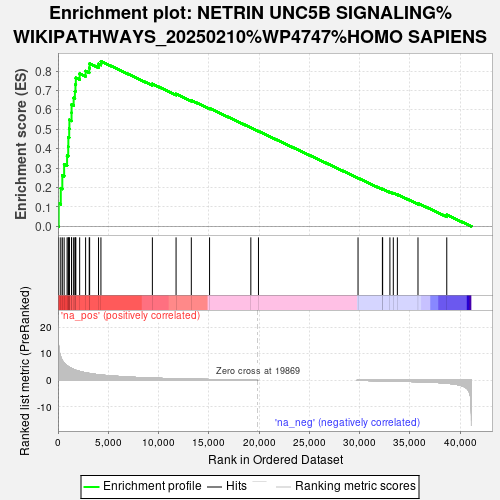
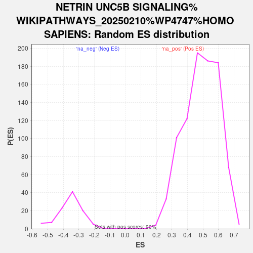

| | | Dataset | DS_vs_CTR_ranked_genelist |
| Phenotype | NoPhenotypeAvailable |
| Upregulated in class | na_pos |
| GeneSet | NETRIN UNC5B SIGNALING%WIKIPATHWAYS_20250210%WP4747%HOMO SAPIENS |
| Enrichment Score (ES) | 0.85013336 |
| Normalized Enrichment Score (NES) | 1.7343566 |
| Nominal p-value | 0.0 |
| FDR q-value | 9.930201E-4 |
| FWER p-Value | 0.011 |
Table: GSEA Results Summary

Fig 1: Enrichment plot: NETRIN UNC5B SIGNALING%WIKIPATHWAYS_20250210%WP4747%HOMO SAPIENS
Profile of the Running ES Score & Positions of GeneSet Members on the Rank Ordered List
| SYMBOL | RANK IN GENE LIST | RANK METRIC SCORE | RUNNING ES | CORE ENRICHMENT | | 1 | MAPK3 | 70 | 12.715 | 0.1193 | Yes |
| 2 | JUN | 277 | 8.649 | 0.1966 | Yes |
| 3 | ITGB4 | 429 | 7.356 | 0.2629 | Yes |
| 4 | VCAM1 | 611 | 6.444 | 0.3198 | Yes |
| 5 | CCL2 | 904 | 5.419 | 0.3643 | Yes |
| 6 | MAPK1 | 1016 | 5.107 | 0.4102 | Yes |
| 7 | COL1A1 | 1029 | 5.079 | 0.4582 | Yes |
| 8 | NEO1 | 1114 | 4.893 | 0.5028 | Yes |
| 9 | UNC5B | 1134 | 4.849 | 0.5484 | Yes |
| 10 | FYN | 1347 | 4.434 | 0.5855 | Yes |
| 11 | PPP2R1B | 1352 | 4.424 | 0.6275 | Yes |
| 12 | RAF1 | 1556 | 4.071 | 0.6613 | Yes |
| 13 | MAPK14 | 1681 | 3.881 | 0.6952 | Yes |
| 14 | SELE | 1735 | 3.792 | 0.7300 | Yes |
| 15 | ARHGEF12 | 1774 | 3.734 | 0.7646 | Yes |
| 16 | MAP2K1 | 2155 | 3.329 | 0.7870 | Yes |
| 17 | CASP3 | 2746 | 2.825 | 0.7996 | Yes |
| 18 | INPP5D | 3107 | 2.572 | 0.8153 | Yes |
| 19 | KDR | 3147 | 2.547 | 0.8386 | Yes |
| 20 | RGMA | 4031 | 2.087 | 0.8369 | Yes |
| 21 | SRC | 4270 | 1.995 | 0.8501 | Yes |
| 22 | RLF | 9388 | 0.846 | 0.7336 | No |
| 23 | RAC1 | 11745 | 0.568 | 0.6817 | No |
| 24 | ROBO4 | 13262 | 0.449 | 0.6491 | No |
| 25 | NTN1 | 15077 | 0.317 | 0.6079 | No |
| 26 | PLEKHH1 | 19183 | 0.029 | 0.5083 | No |
| 27 | MYF5 | 19943 | 0.000 | 0.4898 | No |
| 28 | PRKCA | 29847 | -0.004 | 0.2488 | No |
| 29 | MAP2K2 | 32270 | -0.162 | 0.1914 | No |
| 30 | PTPN11 | 32296 | -0.164 | 0.1924 | No |
| 31 | AGAP2 | 33017 | -0.223 | 0.1769 | No |
| 32 | PTPA | 33356 | -0.258 | 0.1712 | No |
| 33 | CIP2A | 33760 | -0.297 | 0.1642 | No |
| 34 | DCSTAMP | 35811 | -0.502 | 0.1191 | No |
| 35 | ALPL | 38674 | -1.058 | 0.0595 | No |
Table: GSEA details [plain text format]

Fig 2: NETRIN UNC5B SIGNALING%WIKIPATHWAYS_20250210%WP4747%HOMO SAPIENS: Random ES distribution
Gene set null distribution of ES for NETRIN UNC5B SIGNALING%WIKIPATHWAYS_20250210%WP4747%HOMO SAPIENS